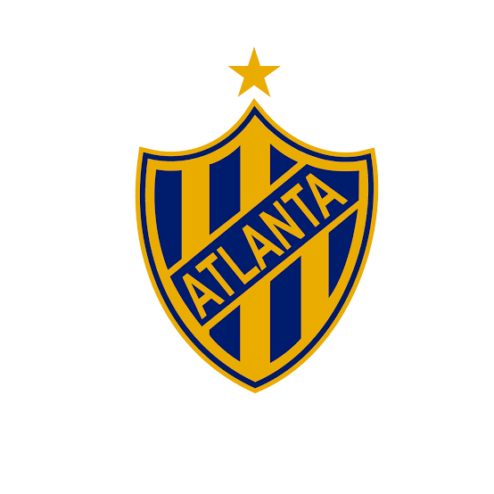
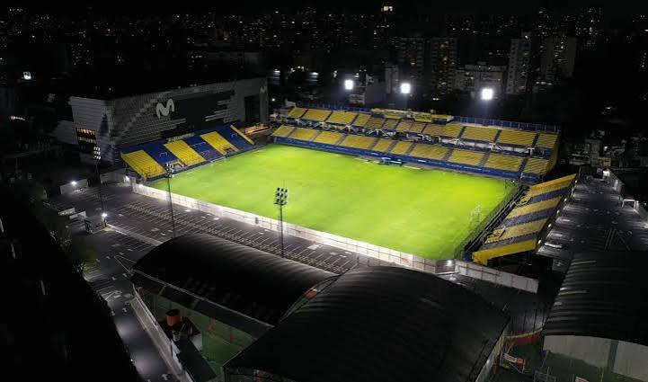
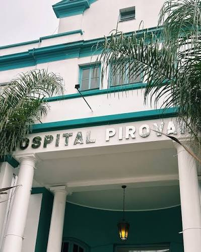

El Club Atletico Atlanta es una institucion social y deportiva Argentina. Ubicada en el barrio porteño de Villa Crespo Fue fundada el 12 de octubre de 1904. Popularmente conocida por el apodo de "Bohemio" Tiene una gran vinvulacion con la comunidad judia Actualmente milita en la primera nacional del futbol argentino Fue uno de los clubes fundadores de la primera liga argentina no amateur. Cuenta con 7 titulos oficiales, 6 del ascenso y uno de primera.

Estadio Leon Kolbowski

Yo al igual que Atlanta fui concevido en un departamento de Villa Crespo por alla de noviembre del año 2008 Y despues de unos ocho meses naci prematuramente en el hospital Pirovano Mis viejos estuvieron a una semana de ponerme de nombre Odiseo pero antes que naciera mi abuela tuvo un poco de clemencia y los convencio de ponerme Dante. Asi que ahora me llamo por el autor de la divina comedia Dante Alighieri Tambien tengo el apellido de Severino Di Giovanni un famoso poeta anarquista italiano. Mi abuelo siempre afirmo que era su tio pero es realmente incomprobable y mejor que quede asi.